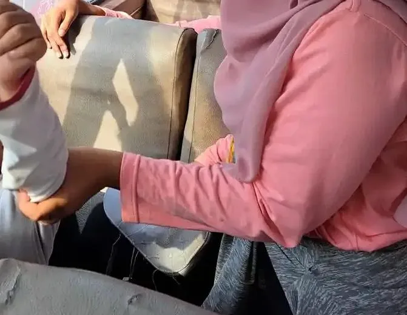

Daftar Isi
- Siapa Lovaas dan apa itu metode Lovaas
- Cara kerja metode Lovaas klasik
- Studi 1987: klaim hasil yang terkenal
- Kritik metodologi terhadap studi 1987
- Bukti sesudahnya: uji acak dan tinjauan sistematis
- Bedanya dengan ABA modern, EIBI, dan NDBI
- Kritik etis dari komunitas autistik
- Panduan orang tua sebelum memilih terapi
- Pertanyaan yang sering diajukan
Siapa Lovaas dan apa itu metode Lovaas
Nama Lovaas merujuk pada O. Ivar Lovaas (1927 sampai 2010), psikolog di University of California, Los Angeles (UCLA) yang mengabdikan hampir setengah abad untuk penelitian dan layanan bagi anak autis. Menurut Smith dan Eikeseth (2011), pada 1960-an ia merintis intervensi berbasis Applied Behavior Analysis (ABA) untuk mengurangi perilaku menantang yang berat dan membangun bahasa komunikatif pada anak autis. Belakangan ia menekankan intervensi dini bagi anak usia prasekolah yang dijalankan di rumah dengan peran aktif orang tua, lalu menyebarkannya lewat buku panduan, film edukasi, dan ceramah.
Di Indonesia, istilah "metode Lovaas" sering dipakai untuk menyebut terapi perilaku terstruktur di meja yang dijalankan satu terapis dengan satu anak. Banyak orang tua juga memakainya sebagai sinonim terapi ABA. Penyamaan ini perlu diluruskan. ABA adalah ilmu terapan tentang bagaimana perilaku dipelajari, sedangkan metode Lovaas adalah salah satu program yang dibangun dari ilmu itu pada masanya. Penjelasan umum tentang ABA ada di artikel terapi ABA untuk anak autis, sedangkan artikel ini fokus pada sejarah, bukti, dan kritik terhadap program Lovaas.
Kenapa sejarah ini penting bagi orang tua sekarang? Karena angka "47 persen anak normal" dari studi Lovaas masih sering dikutip dalam brosur dan percakapan antarorang tua, sering tanpa konteks. Memahami dari mana angka itu berasal, apa kelemahannya, dan apa yang ditemukan penelitian sesudahnya membantu keluarga menilai tawaran terapi dengan lebih tenang.
Cara kerja metode Lovaas klasik
Program Lovaas klasik, yang dijalankan dalam UCLA Young Autism Project, memiliki beberapa ciri yang membedakannya dari layanan terapi biasa pada masa itu.
- Usia dini. Anak mulai mengikuti program pada usia prasekolah, dengan anggapan bahwa intervensi lebih awal memberi peluang perkembangan lebih besar.
- Intensitas tinggi. Anak dalam kelompok intensif menerima rata-rata sekitar 40 jam terapi per minggu. Leaf dan rekan (2022) menegaskan angka itu rata-rata: ada anak yang menerima lebih dan ada yang jauh lebih sedikit, sesuai kebutuhan masing-masing.
- Pengajaran terstruktur. Keterampilan dipecah menjadi langkah kecil dan diajarkan berulang lewat percobaan singkat (discrete trial training): instruksi, respons anak, lalu konsekuensi seperti pujian atau hadiah.
- Dijalankan di rumah dan melibatkan orang tua. Orang tua dilatih agar pengajaran berlanjut di luar sesi.
- Berlangsung bertahun-tahun. Program tidak berhenti dalam hitungan bulan, tetapi berjalan sekitar dua tahun atau lebih.
Satu ciri lain perlu disebut dengan jujur: di era awal, program ini juga memakai prosedur hukuman. Bagian kritik etis di bawah membahasnya, termasuk bagaimana praktik itu berubah.

Studi 1987: klaim hasil yang terkenal
Hasil yang membuat nama Lovaas mendunia terbit di Journal of Consulting and Clinical Psychology tahun 1987 dengan judul "Behavioral treatment and normal educational and intellectual functioning in young autistic children". Kelompok eksperimen berisi 19 anak usia prasekolah yang menerima terapi intensif, dibandingkan dengan anak-anak dalam kelompok kontrol.
Menurut ringkasan Gresham dan MacMillan (1998), proyek ini mengklaim menghasilkan "pemulihan" dari autisme pada 47 persen kasus dan pengurangan berat keparahan pada 42 persen kasus lainnya. Angka 47 persen itu setara dengan 9 dari 19 anak di kelompok eksperimen yang dinilai mencapai fungsi intelektual dan pendidikan normal, misalnya dapat masuk kelas reguler.
Studi lanjutan oleh McEachin, Smith, dan Lovaas (1993) menilai ulang anak-anak tersebut pada usia rata-rata 11,5 tahun. Kelompok eksperimen tetap mempertahankan keunggulannya atas kelompok kontrol yang berisi 19 anak dengan kondisi serupa. Dari 9 anak dengan hasil terbaik pada usia 7 tahun, 8 anak dinilai tidak dapat dibedakan dari anak rata-rata pada tes kecerdasan dan perilaku adaptif.
| Publikasi | Yang dilaporkan | Catatan |
|---|---|---|
| Lovaas, 1987 | 9 dari 19 anak kelompok intensif (sekitar 47 persen) mencapai fungsi intelektual dan pendidikan normal | Satu studi dengan sampel kecil; cara pembagian kelompoknya dipersoalkan pengkritik |
| McEachin dkk., 1993 | Keunggulan bertahan sampai usia rata-rata 11,5 tahun; 8 dari 9 anak hasil terbaik tidak dapat dibedakan dari anak rata-rata pada tes | Anak yang sama; penulisnya termasuk Lovaas sendiri |
| Gresham dan MacMillan, 1998 | Menilai klaim 47 persen "pulih" dan 42 persen membaik banyak memiliki sejumlah masalah metodologis | Menyarankan orang tua bersikap skeptis yang sehat |
Penting dicatat, kata "pulih" atau "recovery" di sini adalah istilah dalam perdebatan penelitian saat itu. Bahkan Leaf dan rekan (2022), yang membela warisan Lovaas, mengakui istilah itu bermasalah karena konotasinya. Autisme adalah kondisi perkembangan seumur hidup, sehingga yang diukur studi ini adalah skor tes dan penempatan sekolah, bukan hilangnya autisme.
Kritik metodologi terhadap studi 1987
Sejak awal, studi Lovaas memicu perdebatan panjang. Gresham dan MacMillan (1998) menilai proyek ini menghadapi ancaman terhadap validitas internal maupun eksternal. Pertanyaan yang mereka angkat meliputi kapan terapi dimulai, intensitas dan lamanya terapi, penugasan acak, desain pembanding antarterapi, dan integritas pelaksanaan terapi. Mereka juga menulis bahwa para penulis proyek tampak enggan mengakui kelemahan metodologis dalam pengambilan sampel, desain, dan analisis data.
Bagi orang tua, kritik itu dapat diterjemahkan menjadi beberapa pertanyaan sederhana.
- Apakah kedua kelompok benar-benar setara sejak awal? Gresham dan MacMillan mempersoalkan penugasan acak. Bila kelompok tidak dibagi secara acak, perbedaan hasil bisa disebabkan perbedaan anak, bukan terapinya.
- Apakah ukurannya objektif? Penempatan di kelas reguler bisa dipengaruhi kebijakan sekolah dan advokasi orang tua, bukan hanya kemampuan anak.
- Apakah hasilnya bisa diulang tim lain? Satu studi dengan 19 anak belum cukup untuk dijadikan janji bagi semua anak.
- Siapa yang menilai? Penelitian yang dinilai oleh pengembang programnya sendiri berisiko bias.
Kritik soal mutu penelitian bukan khusus untuk Lovaas. LaPoint dan rekan (2025) mencatat bahwa dalam Project AIM, hampir sepertiga uji intervensi autisme berisiko bias seleksi karena tidak memakai penugasan acak, dan sekitar 65,2 persen efeknya terancam bias karena penilainya tidak dibutakan. Mereka juga mengutip temuan bahwa konflik kepentingan peneliti sering tidak diungkapkan. Jadi sikap kritis terhadap klaim keberhasilan berlaku untuk semua terapi autisme.
Bukti sesudahnya: uji acak dan tinjauan sistematis
Setelah 1987, banyak tim mencoba menguji ulang terapi perilaku intensif dini, yang kemudian dikenal dengan istilah EIBI (Early Intensive Behavioral Intervention). Berikut bukti utama yang bisa dibaca orang tua, diurutkan dari tahun terbit.
Uji acak Smith, Groen, dan Wynn (2000)
Uji acak ini membagi anak secara acak ke dua kelompok. Kelompok terapi intensif (7 anak autis dan 8 anak dengan PDD-NOS) menerima rata-rata 24,52 jam per minggu selama satu tahun, lalu jamnya dikurangi bertahap selama 1 sampai 2 tahun berikutnya. Kelompok pembanding (7 anak autis dan 6 anak PDD-NOS) menerima pelatihan orang tua selama 3 sampai 9 bulan. Kelompok intensif lebih unggul dalam kecerdasan, kemampuan visual spasial, bahasa, dan akademik, tetapi tidak dalam perilaku adaptif maupun masalah perilaku. Anak dengan PDD-NOS tampaknya memperoleh kemajuan lebih besar dibanding anak autis. Hasil ini lebih sederhana dibanding klaim 1987.
Meta-analisis Eldevik dan rekan (2009)
Meta-analisis ini menemukan 34 studi EIBI, 9 di antaranya memiliki kelompok pembanding atau kontrol. Rata-rata ukuran efeknya 1,10 untuk perubahan kecerdasan dan 0,66 untuk perubahan perilaku adaptif, yang oleh penulis digolongkan besar dan sedang. Penting dicatat, sebagian penulisnya adalah peneliti dan praktisi EIBI.
Tinjauan Cochrane Reichow dan rekan (2018)
Tinjauan Cochrane adalah salah satu rujukan paling ketat. Tinjauan ini hanya memasukkan 5 studi (1 uji acak dan 4 uji terkontrol tanpa pengacakan) dengan total 219 anak: 116 di kelompok EIBI dan 103 di kelompok layanan pendidikan khusus biasa. Anak berusia 30,2 sampai 42,5 bulan, dan terapi berlangsung 24 sampai 36 bulan.
| Hasil yang diukur | Perbedaan dibanding layanan biasa | Kualitas bukti |
|---|---|---|
| Perilaku adaptif (skor Vineland) | Rata-rata 9,58 poin lebih tinggi (5 studi, 202 anak) | Rendah |
| IQ | Rata-rata 15,44 poin lebih tinggi (5 studi, 202 anak) | Rendah |
| Bahasa ekspresif dan reseptif | Ukuran efek 0,51 dan 0,55 (4 studi) | Rendah |
| Keparahan gejala autisme | Ukuran efek -0,34, tidak bermakna secara statistik (2 studi, 81 anak) | Rendah atau sangat rendah |
| Masalah perilaku | Ukuran efek -0,58, tidak bermakna secara statistik (2 studi, 67 anak) | Rendah atau sangat rendah |
Kesimpulan penulis Cochrane hati-hati: ada bukti lemah bahwa EIBI mungkin efektif untuk sebagian anak autis. Kekuatan buktinya terbatas karena kebanyakan berasal dari studi kecil dengan desain yang belum optimal, dan penelitian lanjutan sangat mungkin mengubah perkiraan efeknya. Penulis menyarankan penyedia layanan mempertimbangkan masukan keluarga saat merekomendasikan EIBI.
Project AIM, Sandbank dan rekan (2023)
Tinjauan sistematis yang terbit di BMJ tahun 2023 jauh lebih besar: 289 laporan dari 252 studi dengan 13.304 peserta anak autis di bawah 8 tahun. Bila hanya uji acak yang dihitung, intervensi perilaku menunjukkan efek bermakna pada perilaku sosial emosional atau perilaku menantang (ukuran efek 0,58). Namun ketika efek yang berisiko bias deteksi tinggi dikeluarkan, hanya satu efek yang tetap bermakna, yaitu NDBI terhadap ukuran karakteristik autisme (0,30). Penulis juga mencatat efek samping jarang dipantau, padahal mungkin sering terjadi.
Apakah lebih banyak jam berarti lebih baik?
Rekomendasi 20 sampai 40 jam per minggu lahir dari tradisi Lovaas. Meta-analisis Sandbank dan rekan di JAMA Pediatrics tahun 2024 menguji anggapan itu pada 144 studi dengan 9.038 anak. Hasilnya, tidak ada satu pun ukuran jumlah terapi (jam per hari, lama program, atau total jam) yang berhubungan positif dan bermakna dengan besarnya efek. Penulis menyimpulkan hanya sedikit bukti kuat yang mendukung pemberian intervensi intensif.

Bedanya dengan ABA modern, EIBI, dan NDBI
Istilah-istilah ini sering tercampur. Secara sederhana: ABA adalah ilmunya, EIBI adalah model layanan intensif usia dini yang berakar dari program Lovaas, dan NDBI adalah generasi intervensi yang memadukan ilmu perilaku dengan ilmu perkembangan anak. Schreibman dan rekan (2015) menjelaskan bahwa NDBI dijalankan di situasi alami, kendali kegiatan dibagi antara anak dan terapis, memakai konsekuensi alami, dan mengajarkan keterampilan yang sesuai tahap perkembangan.
| Aspek | Metode Lovaas klasik | Layanan berbasis ABA saat ini | NDBI (contoh: PRT, ESDM) |
|---|---|---|---|
| Siapa yang memimpin kegiatan | Terapis, sangat terstruktur | Bervariasi, dari terstruktur sampai mengikuti minat anak | Dibagi antara anak dan orang dewasa, mengikuti minat anak |
| Tempat | Meja terapi di rumah | Rumah, klinik, sekolah | Situasi alami: bermain, makan, rutinitas |
| Hadiah | Sering hadiah dari luar kegiatan (makanan, pujian) | Disesuaikan, makin diarahkan ke hadiah alami | Hadiah alami: anak mendapat yang ia minta |
| Jumlah jam | Rata-rata sekitar 40 jam per minggu | Ditentukan dari asesmen | Sering lewat pelatihan orang tua dan sesi lebih sedikit |
| Hukuman fisik | Dipakai di era awal, lalu ditinggalkan | Tidak dapat diterima; penguatan positif diutamakan | Tidak dipakai |
| Contoh di situs ini | Terapi ABA | Sistem penghargaan | Pivotal Response Training |
Dengan kata lain, menolak metode Lovaas versi 1980-an tidak sama dengan menolak semua bantuan berbasis ilmu perilaku. Banyak teknik yang lahir dari ABA, seperti memecah tugas menjadi langkah kecil, jadwal visual, dan penguatan positif, tetap berguna bila dipakai dengan hormat terhadap anak. Pendekatan berbasis relasi seperti Floortime dan Hanen juga bisa menjadi pilihan, tergantung kebutuhan anak.

Kritik etis dari komunitas autistik
Selain soal metodologi, metode Lovaas dan ABA secara umum mendapat kritik etis dari sebagian orang autis dewasa dan aktivis neurodiversitas. Ringkasan berikut mengikuti Leaf dan rekan (2022), artikel yang memetakan kritik tersebut. Perlu diketahui, dua penulis artikel itu menghabiskan sekitar 20 tahun bekerja bersama Lovaas, sehingga tulisan mereka mewakili sudut pandang pembela ABA yang menanggapi kritik.
Penggunaan hukuman di era awal
Kritik ini berdasar. Leaf dan rekan mengakui bahwa Lovaas memakai kejut listrik dalam praktiknya di UCLA pada 1960-an, sebelum Young Autism Project. Pada 1970-an, kejut listrik diganti dengan pukulan, dan hukuman fisik tidak lagi dipakai pada akhir proyek tersebut. Kode etik analis perilaku sekarang mewajibkan prosedur penguatan diupayakan lebih dulu sebelum prosedur hukuman apa pun. Bagi orang tua, pesannya tegas: hukuman fisik, kejut listrik, atau menahan anak sebagai bagian dari terapi tidak dapat diterima, apa pun nama metodenya.
Beban 40 jam per minggu
Orang autis dewasa mempertanyakan bagaimana anak kecil sanggup menjalani 40 jam terapi per minggu. Pembela ABA menjawab bahwa angka itu rata-rata, bukan ketentuan. Bukti terbaru dari Sandbank dan rekan (2024) justru mendukung kehati-hatian: jam yang lebih banyak tidak terbukti memberi hasil lebih besar, sementara waktu bermain, istirahat, dan kebersamaan keluarga juga penting bagi perkembangan anak.
Menghentikan stimming dan memaksa terlihat "normal"
Banyak orang autis menjelaskan bahwa stimming, seperti mengepakkan tangan atau bergoyang, membantu mereka menenangkan diri dan mengatur emosi. Survei pada orang autis dewasa yang dikutip Leaf dan rekan juga menyebut stimming sebagai perilaku yang berguna. Kritik ini menyoroti tujuan terapi: apakah yang dikejar adalah kemandirian dan kesejahteraan anak, atau sekadar membuat anak tampak seperti anak lain? Kekhawatiran lain adalah masking, yaitu anak belajar menyembunyikan ciri autisnya dengan biaya emosional yang besar.
Kepatuhan dan risiko trauma
Sebagian aktivis menilai terapi yang terlalu menekankan kepatuhan membuat anak sulit berkata "tidak", dan ada laporan yang mengaitkan pengalaman ABA dengan gejala stres pascatrauma. Leaf dan rekan menilai bukti untuk klaim trauma itu lemah. Di sisi lain, Project AIM (2023) mencatat bahwa efek samping intervensi autisme jarang dipantau dengan baik, sehingga manfaat terapi belum bisa ditimbang secara utuh terhadap kemungkinan dampak buruknya. Kedua sisi sepakat pada satu hal: suara orang autis perlu didengar dalam menentukan tujuan terapi.

Panduan orang tua sebelum memilih terapi
Bila Anda ditawari program yang menyebut diri metode Lovaas, terapi ABA intensif, atau EIBI, beberapa langkah berikut membantu memastikan pilihan Anda aman dan sesuai.
- Mulai dari asesmen, bukan dari paket jam. Program yang baik menyusun tujuan berdasarkan asesmen anak Anda, bukan menawarkan paket 40 jam untuk semua anak. Gambaran tingkat dukungan bisa dibaca di autisme level 1, 2, dan 3.
- Cek kualifikasi terapis. Tanyakan latar pendidikan, pelatihan, dan sertifikasi. Secara internasional ada sertifikasi analis perilaku seperti BCBA dari Behavior Analyst Certification Board. Di Indonesia, panduan mengecek kualifikasi terapis ada di lembaga sertifikasi terapis anak di Indonesia.
- Minta tujuan tertulis yang bermakna. Tujuan yang baik menyangkut komunikasi, kemandirian, keselamatan, dan kesejahteraan anak, bukan sekadar menghilangkan perilaku yang tidak mengganggu siapa pun.
- Pastikan tidak ada hukuman fisik. Tanyakan langsung bagaimana terapis menangani tantrum atau penolakan. Jawaban yang baik menjelaskan pencegahan dan penguatan positif. Strategi menghadapi ledakan emosi ada di cara mengatasi tantrum anak autis.
- Boleh mengamati sesi. Program yang terbuka mengizinkan orang tua melihat dan ikut belajar.
- Perhatikan tanda anak tertekan. Bila anak sering menangis hebat, takut masuk ruang terapi, atau kehilangan minat bermain, bicarakan dengan terapis dan pertimbangkan penyesuaian.
- Waspadai janji sembuh. Tidak ada terapi yang menyembuhkan autisme. Klaim "sembuh total" atau "normal dalam sekian bulan" adalah tanda bahaya, sama seperti klaim pada terapi stem cell untuk autisme.
- Gabungkan dengan dukungan lain. Banyak anak juga terbantu oleh terapi wicara dan terapi okupasi. Daftar pilihan ada di macam-macam terapi pada anak.
Soal biaya, program intensif membutuhkan banyak jam terapis sehingga bebannya besar bagi keluarga. Gambaran umum biaya dibahas di biaya terapi anak autis per bulan; tanyakan rincian tarif langsung kepada penyedia layanan karena setiap lembaga berbeda. Dengan bukti terbaru bahwa jam yang lebih banyak tidak otomatis lebih baik, keluarga tidak perlu merasa gagal bila tidak sanggup menjalani program puluhan jam per minggu.
Langkah paling penting tetap sama: mulai sedini mungkin dari intervensi dini yang sesuai, libatkan dokter anak atau psikolog untuk asesmen, dan pilih pendekatan yang membuat anak merasa aman. Cara membaca bukti penelitian sebelum memilih terapi dijelaskan di tinjauan sistematis intervensi dini autisme, dan latihan sosial sehari-hari ada di joint attention pada anak autis.
YUKA mendampingi anak berkebutuhan khusus, termasuk anak autis, melalui pendidikan inklusi di Sekolah Inklusi Taruna Imani. Kami tidak menetapkan diagnosis, dan artikel ini bukan promosi metode terapi tertentu. Bila Anda ingin berdiskusi tentang dukungan belajar untuk anak, lihat layanan pendidikan untuk anak autis di Yogyakarta atau hubungi tim YUKA. Bagi orang tua yang baru menerima diagnosis, artikel untuk orang tua yang baru menerima diagnosis dan tips mendampingi anak autis berisi langkah praktis.
Kesimpulannya, metode Lovaas adalah tonggak sejarah yang membuktikan bahwa anak autis bisa belajar banyak keterampilan lewat pengajaran yang terencana. Namun klaim 47 persen dari studi 1987 tidak bisa dibaca sebagai janji, karena studinya kecil dan bermasalah secara metodologis, sementara tinjauan Cochrane 2018 dan Project AIM 2023 menunjukkan manfaat yang lebih sederhana dengan kualitas bukti yang masih rendah. Praktik hukuman di era awal sudah ditinggalkan, dan pendekatan sekarang bergerak ke arah yang lebih naturalistik dan menghormati anak. Pilihan terbaik adalah yang disusun dari kebutuhan anak Anda, dijalankan oleh profesional berkualifikasi, dan dipantau bersama keluarga.
Pertanyaan yang Sering Diajukan
Apa itu metode Lovaas?
Metode Lovaas adalah program terapi perilaku intensif untuk anak autis usia dini yang dikembangkan O. Ivar Lovaas di University of California, Los Angeles (UCLA) melalui UCLA Young Autism Project. Program ini memakai prinsip Applied Behavior Analysis (ABA), terutama pengajaran terstruktur satu lawan satu yang dikenal sebagai discrete trial training, dijalankan banyak jam per minggu selama beberapa tahun dengan keterlibatan orang tua.
Apakah metode Lovaas sama dengan terapi ABA?
Tidak persis. ABA adalah ilmu terapan tentang perilaku, sedangkan metode Lovaas adalah salah satu program yang dibangun dari ilmu itu pada era 1970-an dan 1980-an. Layanan ABA sekarang jauh lebih beragam: ada yang tetap terstruktur di meja, ada yang dijalankan lewat permainan dan rutinitas sehari-hari, dan prosedur hukuman fisik yang dulu dipakai sudah ditinggalkan.
Benarkah 47 persen anak dalam studi Lovaas sembuh dari autisme?
Studi Lovaas tahun 1987 melaporkan 9 dari 19 anak di kelompok intensif (sekitar 47 persen) mencapai fungsi intelektual dan pendidikan yang tergolong normal. Namun angka itu berasal dari satu studi kecil yang desainnya dikritik keras secara metodologis, misalnya oleh Gresham dan MacMillan (1998). Uji acak dan tinjauan sistematis sesudahnya menemukan manfaat yang jauh lebih kecil. Autisme adalah kondisi perkembangan seumur hidup, sehingga tidak tepat menyebut terapi apa pun sebagai penyembuh.
Apakah metode Lovaas memakai hukuman?
Pada era awal, ya. Leaf dan rekan (2022), yang sebagian penulisnya pernah bekerja bersama Lovaas, mencatat bahwa Lovaas memakai kejut listrik dalam praktiknya di UCLA pada 1960-an, lalu menggantinya dengan pukulan ringan pada 1970-an, dan hukuman fisik tidak lagi dipakai di akhir proyek tersebut. Kode etik analis perilaku saat ini mewajibkan prosedur penguatan positif diupayakan lebih dulu, dan hukuman fisik tidak dapat diterima dalam layanan anak.
Apa kata tinjauan Cochrane tentang terapi perilaku intensif dini (EIBI)?
Tinjauan Cochrane tahun 2018 (Reichow dan rekan) menggabungkan 5 studi dengan 219 anak. Hasilnya, EIBI dikaitkan dengan kenaikan perilaku adaptif rata-rata 9,58 poin dan IQ rata-rata 15,44 poin dibanding layanan biasa, tetapi kualitas buktinya dinilai rendah atau sangat rendah. Penulis menyimpulkan buktinya lemah: EIBI mungkin efektif untuk sebagian anak, dan studi yang lebih baik masih dibutuhkan.
Apakah anak autis harus terapi 40 jam per minggu?
Tidak ada ketentuan baku seperti itu. Leaf dan rekan (2022) menjelaskan angka 40 jam pada studi Lovaas adalah rata-rata, bukan aturan untuk semua anak. Meta-analisis Sandbank dan rekan di JAMA Pediatrics (2024) terhadap 144 studi dengan 9.038 anak tidak menemukan hubungan bahwa jumlah jam terapi yang lebih banyak menghasilkan efek yang lebih besar. Jumlah jam sebaiknya ditentukan dari asesmen dan kondisi keluarga.
Apa itu NDBI dan bedanya dengan metode Lovaas?
NDBI (Naturalistic Developmental Behavioral Interventions) adalah kelompok intervensi yang menggabungkan ilmu perilaku dan ilmu perkembangan anak. Menurut Schreibman dan rekan (2015), NDBI dijalankan di situasi alami, kendali kegiatan dibagi antara anak dan terapis, dan memakai konsekuensi alami. Contohnya Pivotal Response Training dan Early Start Denver Model. Metode Lovaas klasik lebih banyak memakai sesi terstruktur yang dipimpin terapis.
Bagaimana memilih terapis perilaku yang aman untuk anak?
Tanyakan latar pendidikan dan sertifikasinya, minta rencana tujuan tertulis yang bisa Anda pahami, pastikan tidak ada hukuman fisik atau penahanan, dan minta izin mengamati sesi. Terapis yang baik menghormati cara anak menenangkan diri dan menjelaskan kemajuan dengan data. Panduan lengkap ada di artikel lembaga sertifikasi terapis anak di Indonesia.
Bacaan Terkait
Status tinjauan medis: artikel ini disusun oleh tim pendidik, belum ditinjau oleh dokter berlisensi. Tinjauan oleh tenaga medis berkredensial sedang kami siapkan dan status ini akan diperbarui di halaman ini begitu selesai. Alur tinjauan dan koreksi dijelaskan di Kebijakan Editorial YUKA. Untuk keputusan diagnosis atau terapi, rujuklah pada dokter anak, psikiater anak, psikolog, atau terapis yang menangani anak.
Sumber dan Referensi
- Lovaas OI (1987). Behavioral treatment and normal educational and intellectual functioning in young autistic children. Journal of Consulting and Clinical Psychology 55(1):3-9. PMID 3571656
- McEachin JJ, Smith T, Lovaas OI (1993). Long-term outcome for children with autism who received early intensive behavioral treatment. American Journal on Mental Retardation 97(4):359-72. PMID 8427693
- Gresham FM, MacMillan DL (1998). Early Intervention Project: can its claims be substantiated and its effects replicated? Journal of Autism and Developmental Disorders 28(1):5-13. PMID 9546297
- Smith T, Groen AD, Wynn JW (2000). Randomized trial of intensive early intervention for children with pervasive developmental disorder. American Journal on Mental Retardation 105(4):269-85. PMID 10934569
- Smith T, Eikeseth S (2011). O. Ivar Lovaas: pioneer of applied behavior analysis and intervention for children with autism. Journal of Autism and Developmental Disorders 41(3):375-8. PMID 21153872
- Reichow B, Hume K, Barton EE, Boyd BA (2018). Early intensive behavioral intervention (EIBI) for young children with autism spectrum disorders (ASD). Cochrane Database of Systematic Reviews, CD009260. PMC6494600
- Eldevik S, dkk. (2009). Meta-analysis of Early Intensive Behavioral Intervention for children with autism. Journal of Clinical Child and Adolescent Psychology 38(3):439-50. PMID 19437303
- Sandbank M, dkk. (2023). Autism intervention meta-analysis of early childhood studies (Project AIM): updated systematic review and secondary analysis. BMJ 383:e076733. PMC10644209
- Sandbank M, dkk. (2024). Determining Associations Between Intervention Amount and Outcomes for Young Autistic Children: A Meta-Analysis. JAMA Pediatrics 178(8):763-773. PMC11197026
- Schreibman L, dkk. (2015). Naturalistic Developmental Behavioral Interventions: Empirically Validated Treatments for Autism Spectrum Disorder. Journal of Autism and Developmental Disorders 45(8):2411-28. PMC4513196
- Leaf JB, dkk. (2022). Concerns About ABA-Based Intervention: An Evaluation and Recommendations. Journal of Autism and Developmental Disorders 52(6):2838-2853. PMC9114057
- LaPoint S, dkk. (2025). Maximizing the Quality and Reporting Standards of Autism Intervention Science. Autism Research 18(11):2166-2173. PMC12661279
- Behavior Analyst Certification Board: Board Certified Behavior Analyst (BCBA)
Catatan: Artikel ini bersifat edukasi umum dan bukan pengganti konsultasi dengan psikolog, tenaga kesehatan, atau petugas layanan sosial resmi. Semua angka dibaca dari teks asli abstrak PubMed atau teks penuh PMC pada 11 Oktober 2026, dan tahun terbit tiap penelitian disebut di dalam teks. Teks penuh studi Lovaas 1987 tidak tersedia terbuka, sehingga angka hasilnya dikutip dari abstrak penelitian lanjutan dan kritiknya (McEachin dkk. 1993, Gresham dan MacMillan 1998). Ringkasan ini membantu orang tua memahami sejarah dan bukti, tetapi tidak dapat dipakai untuk memilih terapi tanpa asesmen profesional.